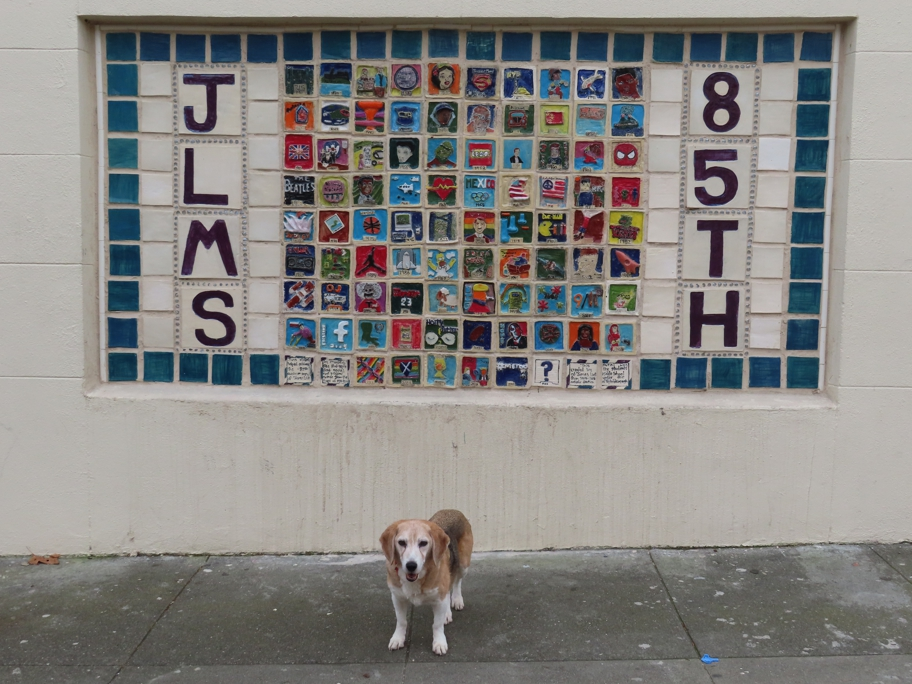

<--Previous Up Next-->

On James Lick Middle School on 25th Street. There's a tile for each year of the school's existence. The first heart transplant was done in 1967.
hearts Huxley Beagle sanfrancisco